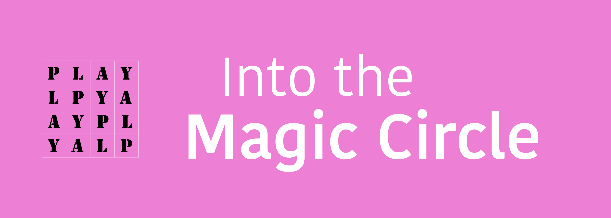
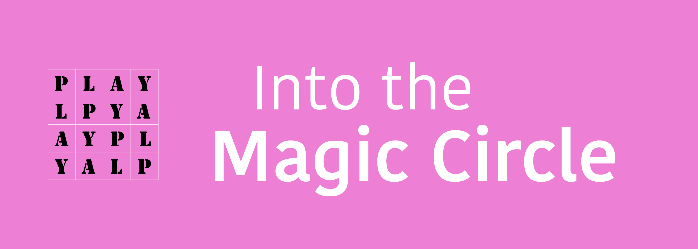

doi: 10.53962/wcrq-jc
Created on 2023-02-20.
Last updated on 2023-02-20.
Daan Rutten
Elena Esposito
Order of play - disorder of the world
doi: 10.53962/rca5-p1p3
Open for Comments!
Homo Ludens and No End: A Bibliography of International Reflections on Johan Huizinga’s Masterwork
doi: 10.26116/7z0q-tx63
 
